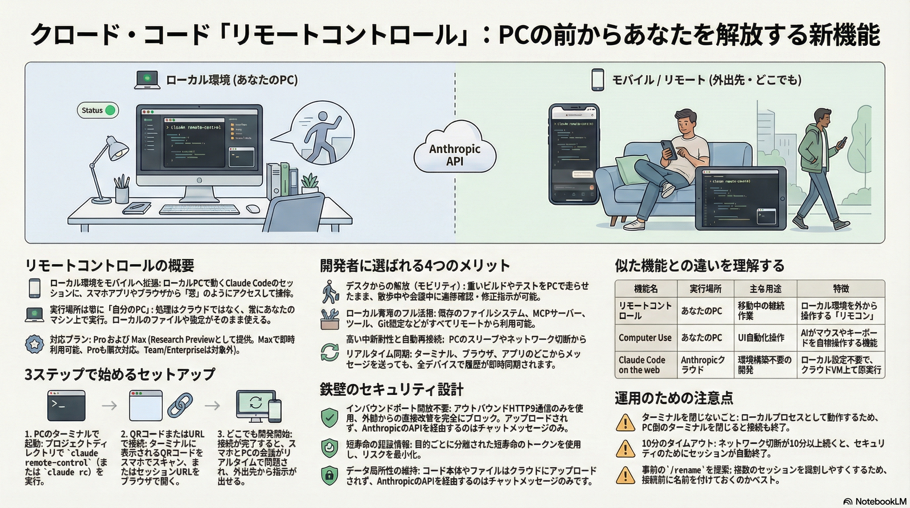

ローカル環境を、どこでも、自由に。スマホやブラウザからClaude Codeセッションを遠隔操作する新機能がResearch Previewとして登場。

重いビルド、ローカルファイルの依存性、セキュリティ制約。開発者は物理的にPCの前に縛られてきた。Remote Controlは処理をローカルに保ったまま、インターフェースだけをポケットの中へ持ち出す。
PCの前に物理的に拘束。
長時間ビルドの待機、進捗確認のために離席不可。
処理はローカルPC。操作はスマホ。
"デスクで始めたタスクを、ソファで引き継ぐ。"
クラウドへの移行ではなく、ローカル環境への「窓」。データや計算処理はすべてローカルPCで完結し、Anthropic APIを経由するのはプロンプトとテキスト出力だけ。ファイル本体はクラウドに保存されない。
リモート操作でありながら、セキュリティを極限まで高めた設計。インバウンドポートは一切開かず、短寿命の使い捨てクレデンシャルを使用。
短寿命・単一目的のクレデンシャル。万が一漏洩しても影響は極小。
APIを経由するのはプロンプトとテキスト出力のみ。ファイル本体はクラウドに保存されない。
ターミナルを閉じれば即切断。ユーザーが物理的にプロセスを管理。
Remote Control、Claude on the Web、Computer Use。それぞれの特徴と使い分け。
| Remote Control | Claude on Web | Computer Use | |
|---|---|---|---|
| 実行場所 | ローカルPC (Local) | クラウド (Cloud) | クラウド / API |
| ローカルファイル | フルアクセス (Full) | 不可 (None) | 視覚的のみ (Visual) |
| 主な用途 | 外出先からの指示・監視 | 環境構築不要・並列処理 | AIによるGUI自動操作 |
重いリファクタリングを仕掛けて外出。犬の散歩中にスマホでエラーを確認し、追加指示を出す。
自然言語プログラミングならキーボード不要。ソファでくつろぎながらアプリ開発。
デプロイ監視のために残業する必要なし。食事中にスマホで完了通知を確認。
サーバー再起動やログ確認。通勤電車から自宅/オフィスのPCへ安全にアクセス。
マネージャー業務。コード変更内容やファイル整理の結果を、タブレットから確認して承認。
機密データをクラウドに上げることなく、ローカルで脆弱性スキャンを実行。結果だけをリモートで確認。
cd my-project
claude remote-control
Claudeアプリでスキャン
/config → Enable Remote Control for all sessions = true
claude remote-control --sandbox でファイルシステムとネットワークをOSレベルで隔離。セキュリティを強化。
caffeinate -i claude remote-control でPCのスリープを防止。長時間セッションに推奨。
--sandbox フラグでOSレベルの隔離を実現。Bashコマンドと子プロセスをコンテナ内に封じ込め、プロジェクトディレクトリ外への書き込みをブロック、許可されたドメイン以外へのネットワークアクセスを制限。
Bashコマンドと子プロセスをOSレベルで隔離
プロジェクトディレクトリ外への書き込みをブロック
許可されたドメイン以外へのアクセスを制限
ターミナルを閉じるとセッションは終了します。PCの電源とネットワーク接続が必要です。
ネットワーク切断が約10分続くと、セキュリティのためプロセスが終了します。
1つのセッションに接続できるリモートデバイスは1台のみです。
| Action | Command | Note |
|---|---|---|
| セッション開始 | claude rc |
remote-control の短縮形 |
| セッション内から有効化 | /rc |
既存セッション中に実行 |
| 設定画面 | /config |
Auto-Enable等の設定 |
| QRコード再表示 | /mobile |
アプリから接続用 |
| セッション名変更 | /rename |
複数セッションの識別用 |
私たちは「キーボードを叩き続ける」スタイルから、「エージェントを監督（Supervise）する」スタイルへと移行しています。
"Code Local. Control Anywhere."